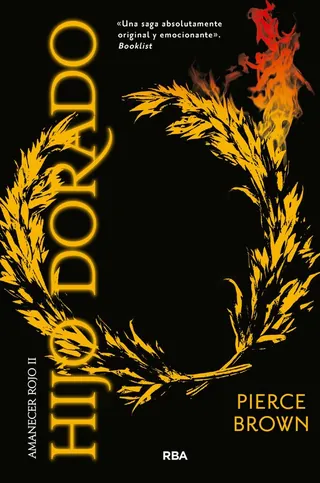

Welcome, let me introduce myself
Manuel Cernuda.
Head of Talent Growth & Training at SNGULAR
Ever since I was a child, my life has revolved around computers. I started "programming" in BASIC at the age of 11, thanks to my uncle, who gave me the programming bug. Then came a few experiments with HTML and JavaScript on my own and, since then, the hobby has never stopped growing.
As a teenager I started taking part in associations and user groups where I learnt a lot and shared what I knew with others, both in workshops and by giving talks. One of them was AsturLinux, which I chaired for several years. That period helped me lose my fear of public speaking, gain experience and enjoy even more something I was already passionate about.
I have been working professionally for more than 20 years in different areas of software development. I am currently Head of Talent Growth & Training at Sngular, where I help people grow professionally within the company, broadening their knowledge through training and soft skills practice.
I consider myself an open, outgoing and transparent person. I love cooking, although I probably enjoy eating even more. I am an avid reader with a soft spot for fantasy. Brandon Sanderson and Sarah J. Maas are among my favourite authors. That love of fantasy has also led me to collect editions of The Hobbit in as many languages as I can. I also enjoy photography and collect Rubik's cubes. I already have more than 300 and can solve them all, although the odd cheat sheet is still necessary.
Sport is another important part of my life, although my main motivation has never exactly been a love of running. In four years I went from 180 kg to 90 kg, and I have managed to stay in good shape ever since. Along the way I went from not being able to run for a bus to finishing three marathons, with a best time of 3 h 33 min, and more than 30 half marathons. The truth is I don't particularly like running. I do it because it works for me and because it lets me keep enjoying food without worrying so much about every dish. Everyone has their own reasons to do sport.
And, above all, there is my family. my partner Isabel, and I have been running the most important project of our lives since 2013: our daughter Emma❤️.
Find me on
Résumé
My career
Experience, positions and education.
See my careerCurrently reading

Hijo dorado
Pierce Brown
59 books finished in 2026
See my readingLatest on the blog
Telegram notifications from your own processes and applications
7 Nov 2026 · Tech
Read